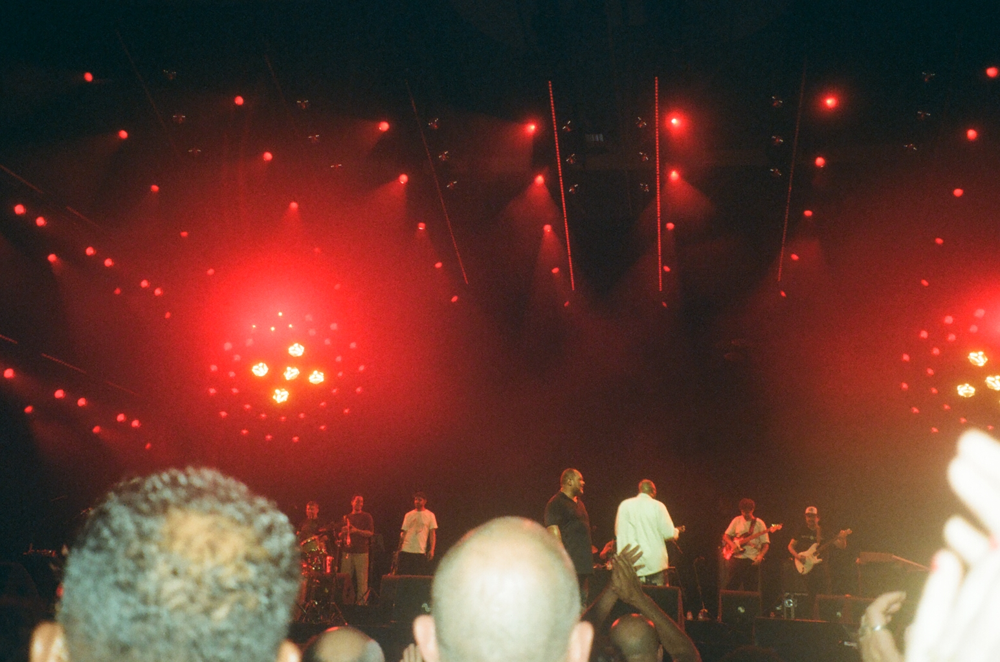
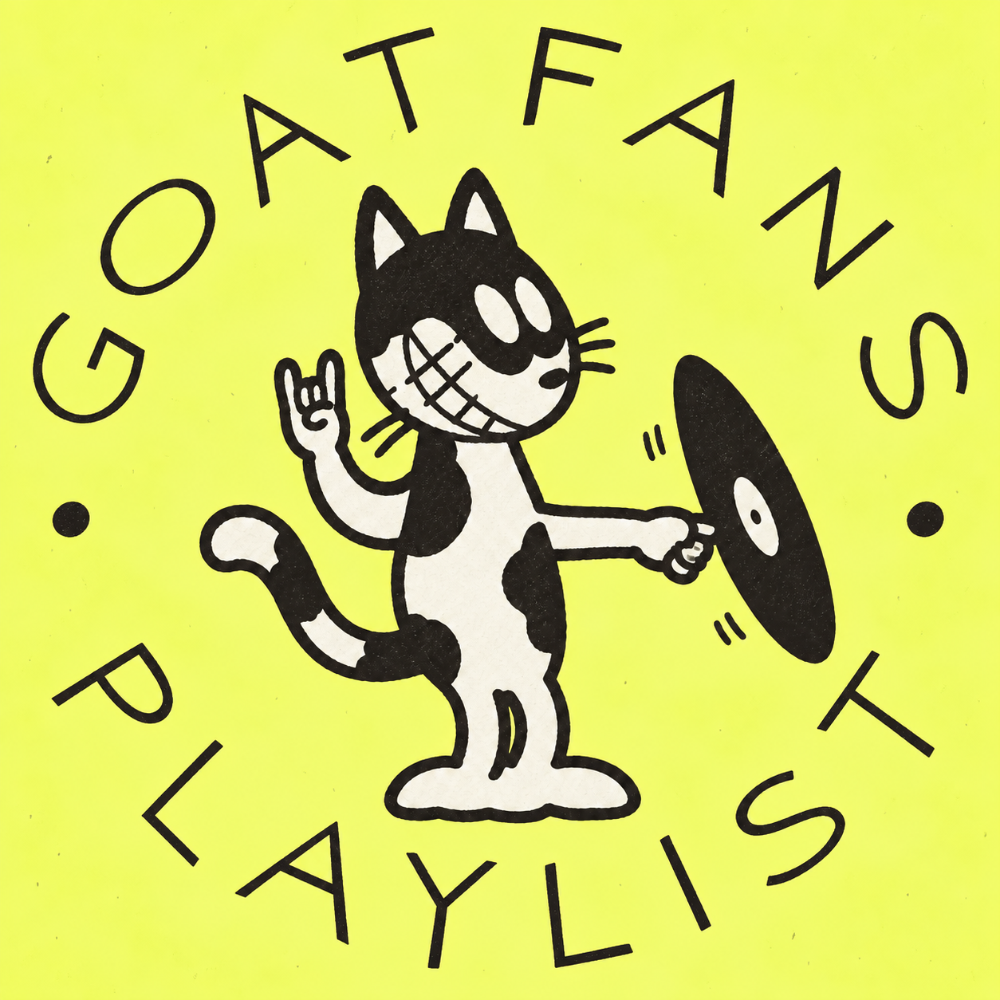

CHINA MARKETING & ARTIST SERVICES

Your music.
A way into China.

GOATFANS connects artists and music companies with audiences in China through local insight, storytelling and music marketing.
We started by making the music content we wanted to see, building a community of listeners along the way. Today, that same taste, audience and understanding of Chinese music culture shapes our work with artists, labels and management teams.
From introducing an artist to supporting a new release or deepening an existing fan connection, we build campaigns around the music and the people it can reach — through digital PR, original content, creator collaborations and live opportunities.
Explore our services
ON REPEAT / GOATFANS SELECTS
Good music.
Keep it close.
Our playlist is a good place to get to know us: the records we keep coming back to and the discoveries we want to share. Rooted in soul, funk, jazz and R&B, with room for anything that moves us.
Listen on Apple MusicMUSIC, STORIES & CONVERSATIONS / FOLLOW GOATFANS